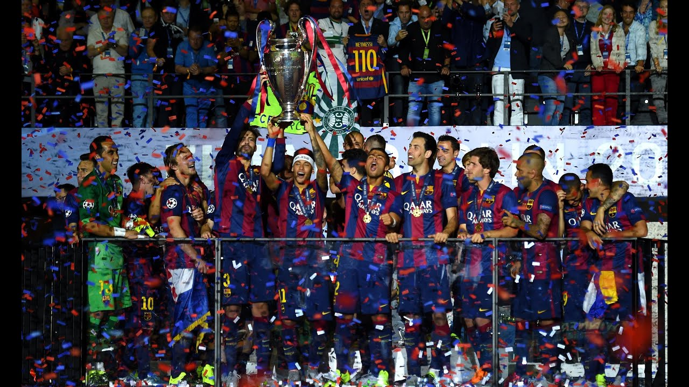
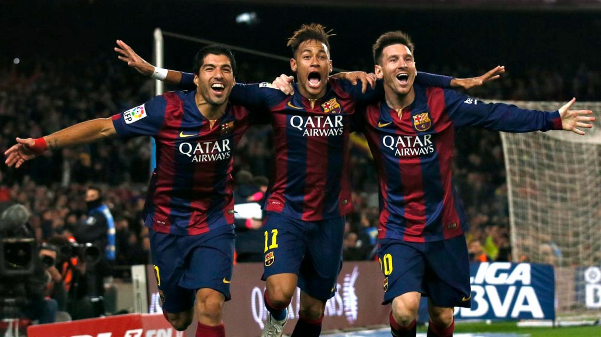
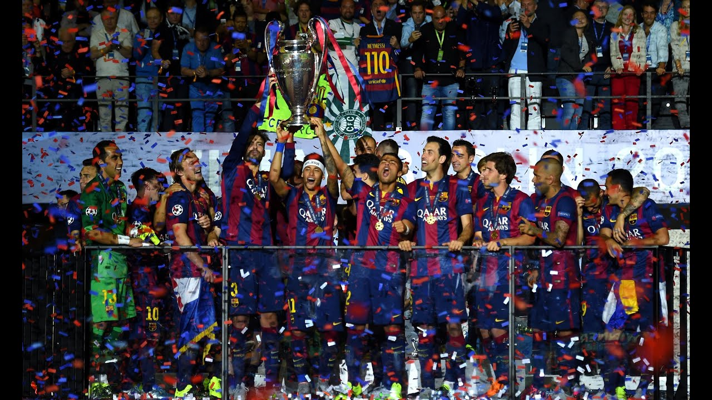
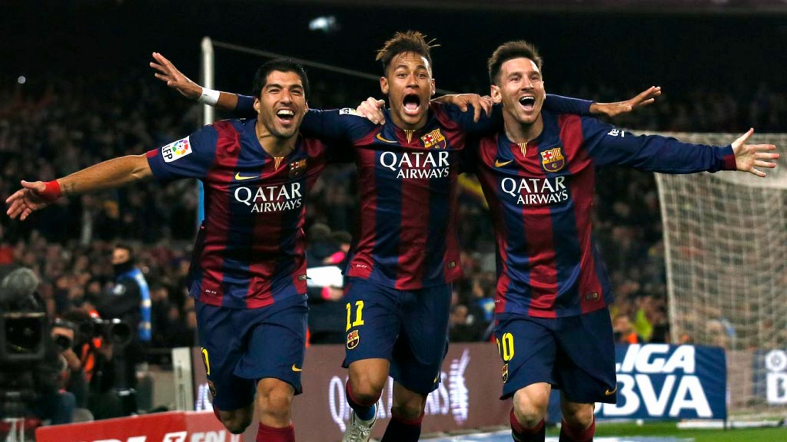
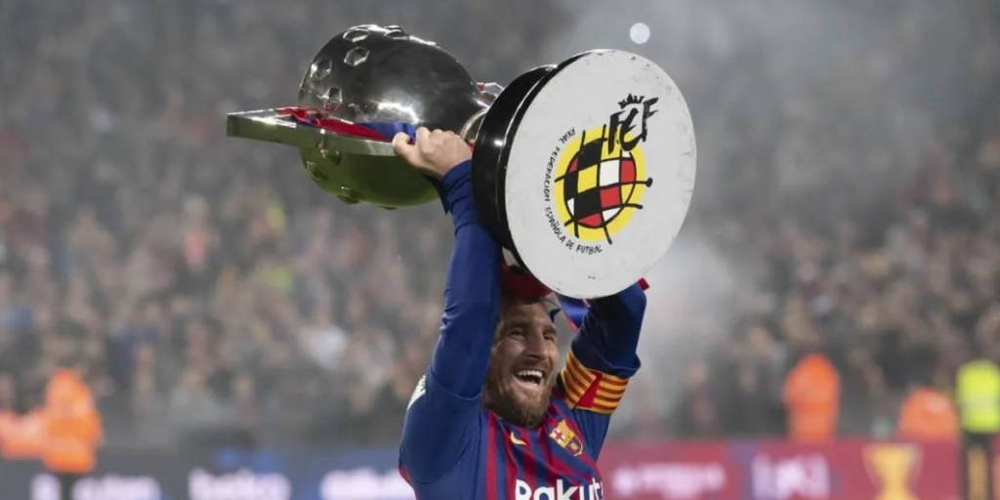
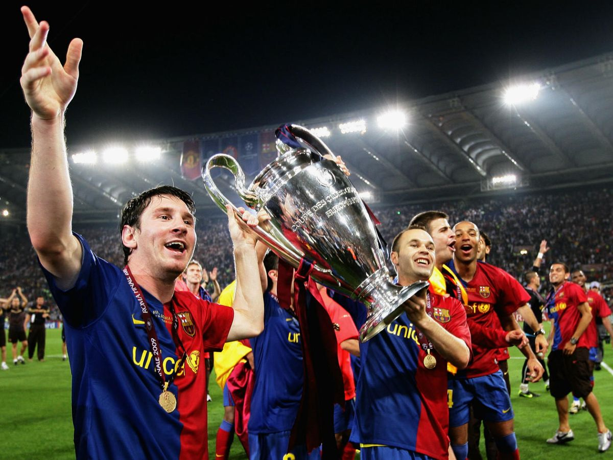

FC Barcelona
Més que un club
Més que un club
12 de enero, 2025
El Barça derrotó al Real Madrid 5-2 en una victoria aplastante, demostrando que el Madrid no es rival para el Barça.
El Futbol Club Barcelona, conocido comúnmente como FC Barcelona o Barça, fue fundado el 29 de noviembre de 1899 por un grupo de futbolistas suizos, catalanes, alemanes y británicos, liderados por el suizo Joan Gamper. Desde su creación, el club se ha caracterizado por su fuerte identidad catalana y su lema "Més que un club" ("Más que un club"), que refleja su influencia en la sociedad y la cultura de Cataluña.
A lo largo de su historia, el Barça se ha consolidado como uno de los clubes más exitosos y reconocidos mundialmente, tanto en el ámbito nacional como internacional. Ha ganado numerosos títulos, incluyendo 26 Ligas españolas, 31 Copas del Rey y 5 Ligas de Campeones de la UEFA. Además, es famoso por su estilo de juego, el "tiki-taka", que prioriza la posesión del balón y el juego en equipo. A lo largo de los años, el FC Barcelona ha contado con jugadores legendarios como Lionel Messi, Johan Cruyff, Xavi Hernández, Andrés Iniesta y Ronaldinho, entre otros, quienes han dejado una huella indeleble en la historia del club.
 





.jpg)

El mejor futbolista de todos los tiempos, Messi es el máximo goleador en la historia del FC Barcelona. Su habilidad para driblar, asistir y marcar goles lo convirtió en un ícono del club.
El talentoso delantero brasileño deslumbró a los aficionados del Barça con su creatividad, velocidad y regates. Formó parte del trío ofensivo "MSN" junto a Messi y Suárez
Uno de los mediocampistas más elegantes de la historia del fútbol. Iniesta destacó por su visión, control del balón y pases precisos, siendo un pilar en la era dorada del club.

El delantero uruguayo fue conocido por su instinto goleador y su capacidad para asociarse con sus compañeros. Su contribución fue clave en múltiples títulos para el Barça.
27 títulos conquistados, reafirmando su dominio en España.
31 victorias que consolidan su historia en España.

5 trofeos que marcan su grandeza en Europa.
3 conquistas como mejor equipo del mundo.